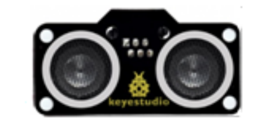
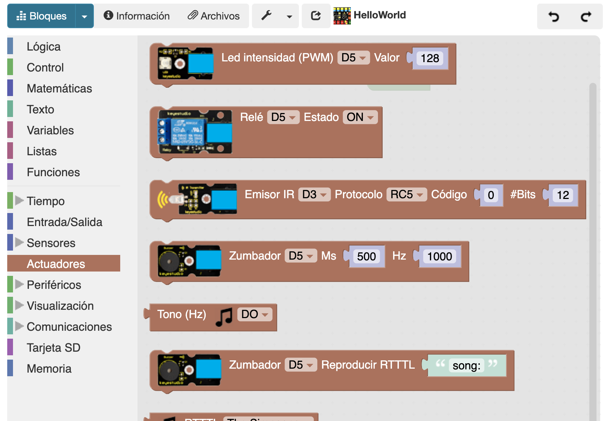

Para esta misión, vamos a realizar utilizar varios sensores y actuadores del kit. Vamos a emplear el sensor de ultrasonidos para que cuando detecte un objeto a una distancia menor (<) de 10 cm se enciendan los dos LEDs de nuestro fantasma (Conectaremos los LEDs en el PIN D5 y D6) y suene una melodía RTTTL en el zumbador conectado al PIN D7.
El sensor de ultrasonidos actúa como la orientación de los murciélagos que tienen muy poca vista y se guían por ultrasonidos. El modo de funcionamiento de este sensor es muy sencillo, uno de los dos “ojos” emite ondas ultrasónicas (no perceptibles para el oído humano) después de la señal de disparo. Cuando estas ondas ultrasónicas encuentran un objeto chocan y se reflejan como eco. Al volver son recibidas por el otro “ojo”, por lo que se puede determinar la distancia del objeto a partir de la diferencia de tiempo entre la señal de disparo y la señal de eco.

Sensor "Ultrasonido"
Al kit Easy Plug podemos conectar un sensor de ultrasonidos al PIN D3/D4 (esto se debe a que para el funcionamiento del sensor necesita dos Pines, uno para emitir el ultrasonido (el Pin Trig) y otro para recibirlo (el Pin Echo).
Sensor "Ultrasonido" conectado al PIN D3 y D4
Utilizaremos nuevamente el bloque condicional "menor que" para realizar esta actividad y el bloque de lógica "si hacer".
Utilizaremos el bloque específico para el Zumbador que está en el menú de “Actuadores”. A través del bloque RTTTL vas a poder hacer sonar infinidad de melodías en tu zumbador.

El resultado de esta misión sería algo similar a lo que aparece en el vídeo.

 |
 |
 |